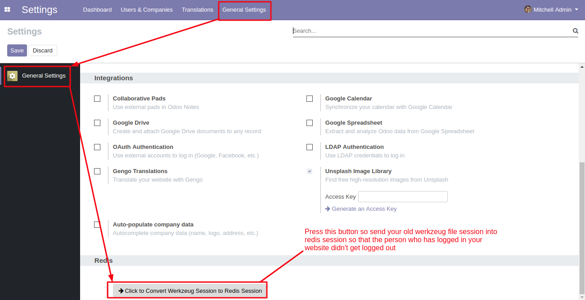

Complimentary Support
You will get 90 days free support for any doubt, queries, and bug fixing (not including data recovery) or any type of issue related to this module.
Redis is an in-memory data structure store, used as a database, cache and message broker. It supports data structures such as strings, hashes, lists, sets, sorted sets with range queries, bitmaps, hyperloglogs, geospatial indexes with radius queries and streams. Redis has built-in replication, Lua scripting, LRU eviction, transactions and different levels of on-disk persistence, and provides high availability via Redis Sentinel and automatic partitioning with Redis Cluster.
Exceptionally Fast : Redis is very fast and can perform about 110000 SETs per second, about 81000 GETs per second. You can use the redis-benchmark utility for doing the same on your machine.
Supports Rich data types : Redis natively supports most of the datatypes that most developers already know like list, set, sorted set, hashes. This makes it very easy to solve a variety of problems because we know which problem can be handled better by which data type.
Operations are atomic : All the Redis operations are atomic, which ensures that if two clients concurrently access Redis server will get the updated value.
Firstly install the redis
Steps to install redis in debian or ubuntu based server:-
Note: At the beginning there will be empty list of Keys
Then install redis liberary for Python by command pip3 install redis
Then in server config file add following things:-
You can convert the Werkzeug Files Session into Redis Session so that the person who has logged in in your website didn't get logged out when your redis session store begins 
You will get 90 days free support for any doubt, queries, and bug fixing (not including data recovery) or any type of issue related to this module.